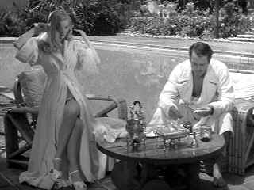

| Sullivan's
Travels (SE)/B+,C+ |
| Universal/1941/90/FS 1.33/BW |
Many consider Sullivan's Travels the pinnacle of director Preston
Sturges career. When the writer/director sticks to typically zany Sturges comedy, Sullivan's is on
a par with his best. But, just as his protagonist writer/director John L. Sullivan fails in his
attempt to break away from the successful lightweight studio films he's been making, Sturges seems
to go off course in Sullivan's Travels. For almost half the film, Sullivan makes a road
odyssey to research the next film (Which the studio is against.), a socially conscious effort called O Brother
Where Art Thou? (The title of the recent Coen Brothers homage to
Sullivan's Travels.) While flickers of humor punctuate the later travels, the material is mired in a
sanctimonious look at downtrodden America. Given the body of Sturges' work, I sometimes wonder if
the director wasn't just making one big joke about the pretensions of Hollywood filmmakers with the
extended serious section of Sullivan's Travels. It would still fail, but at least it would
be a bravura failure.
 |
| Sullivan takes a break.
©Universal |
Slapstick fans are treated to one great chase. Trademark snappy Sturges
dialogue replete with sexual innuendo is delivered in ample helpings. There's a wonderful stopover
at a widow's house that will leave you smothered in laughs. The scenes between Sullivan and the
young would-be actress he befriends on the road are terrific and supplies an excellent romantic
component for Sullivan's Travels. As always, the compliment of supporting characters adds
amazing depth to Sturges work.
Joel McCrea is a perfect Sturges hero. McCrea wears Everyman's clothing
like a model for upright and innocent. Not surprisingly, Sturges cast him again in the wonderful Palm
Beach Story and the much mutilated The Great Moment. As Sullivan, he can shyly shuffle
his way out of the arms of a hungry widow, take water spills with cool, and battle studio
executives with self-righteous determination. Romantically, he and co-star Veronica Lake are a fine
pair. McCrea warbles and Lake coos. Lake handles zippy Sturges dialogue with a breathy sexuality.
Regular supporting players William Demarest, Eric Blore, Jimmy Conlon, and Franklin Pangborn add to
the Sturges touch.
It's always a dicey proposition to evaluate transfer quality on older films.
Are these these the best source elements available? How much digital restoration is a good thing?
How much grain can you eliminate with wiping away the character of film? This Sullivan's
Travel's DVD often appears too soft. Is it a result of digital cleaning? Personally, I prefer
transfers that deliver the best resolution, warts and all. I'll take additional specs of dirt and
scratches rather than an overall softer homogenized image. I like my milk straight up. There is
plenty of dirt on the elements, but it doesn't bother me. I noted some image flashing
too. The transfer could have had more punch to it. It's missing the theatrical snap
that adds depth to the picture. A trifle more range on the contrast might have helped. It's almost
as if the gamma settings favor gray over black. Mono sound is typically thin but age related
hiss is well hidden.
The supplements on this special edition include an audio commentary with
filmmakers Noah Baumbach, Christopher Guest and Michael McKean and Kenneth Bowser. A video
interview with Sturges widow Sandy adds some nice personal memories of the director. A very
well-made PBS 56 minute documentary Preston Sturges: The Rise and Fall of an American Dreamer provides
excellent biographical material on what made Sturges tick.
|
|
|
|

Selections from the Feature Archive include articles on
Akira Kurosawa, Frank
Darabont, Blonde Bimbos, Hollywood Street Gangs, or Vietnam: The
Hollywood Pariah, and many more....
Sturges Emerges
Preston Sturges was Hollywood's resident comic genius for more than a decade. His movies are
timeless. Click on his image to read all about it.

Lady Eve,
The (SE) A,C+

Wonderful classic comedy from writer/director Preston Sturges. Henry Fonda and Barbara Stanwyck
star.
 
ISF Monitor Calibrations in the
Tristate New York area. Lots of hardware info and frequent hardware peaks from video expert Kevin
Miller.They may be judgmental, but that's the point, isn't it. Lots of DVD reviews plus news and
more.
 Have you visited Home Theater
Talk lately? One of the friendliest places on the Net for Home Theater and DVD discussion, you
can get help for installation problems or simply share your opinions with other Vidiots. Have you visited Home Theater
Talk lately? One of the friendliest places on the Net for Home Theater and DVD discussion, you
can get help for installation problems or simply share your opinions with other Vidiots.
 Brad Lang continues to add more interesting material to the extensive
collection at Classic
Movies. Everything from actors and actress to your favorite directors is
linked at the site. Brad Lang continues to add more interesting material to the extensive
collection at Classic
Movies. Everything from actors and actress to your favorite directors is
linked at the site.

The official site for information about the great comic director. A treat for connoisseurs of
classic Hollywood madcap.

The
Movie Poster Archive includes extensive poster images from the films of stars like Susan Hayward,
Kirk Douglas, Katharine Hepburn and many more. Our featured star is Danny Kaye.
|